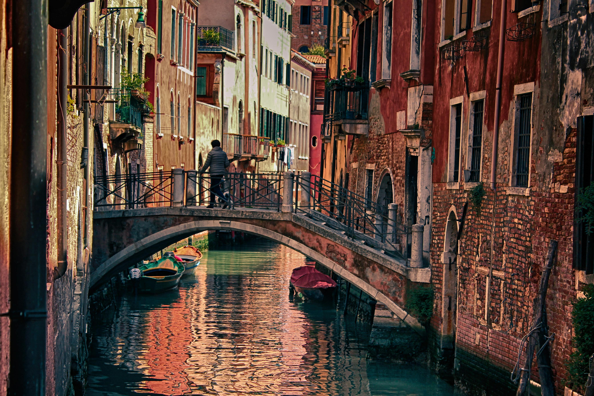
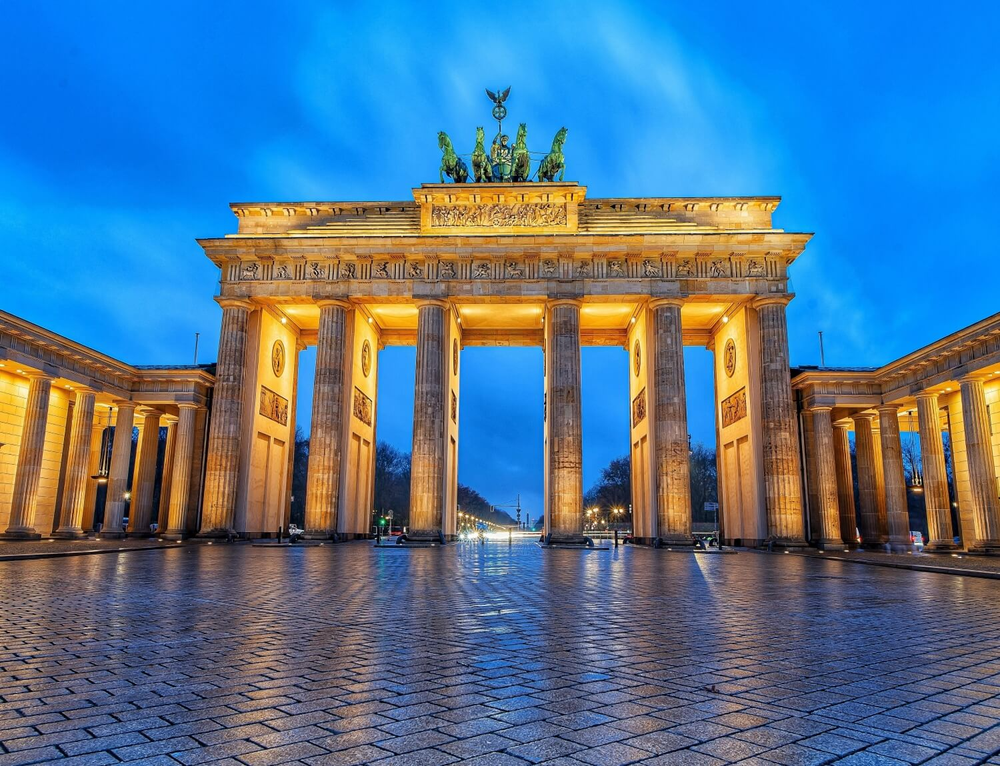

París
Fechas disponibles: 5-10 Abril
Descubre la Ciudad de la Luz visitando la Torre Eiffel, el Museo del Louvre y paseando por el río Sena. Ideal para disfrutar de gastronomía francesa y compras en los Campos Elíseos.

Fechas disponibles: 5-10 Abril
Descubre la Ciudad de la Luz visitando la Torre Eiffel, el Museo del Louvre y paseando por el río Sena. Ideal para disfrutar de gastronomía francesa y compras en los Campos Elíseos.

Fechas disponibles: 15-22 Abril
La Ciudad Eterna te espera con el Coliseo, el Foro Romano y la Fontana di Trevi. Disfruta de su rica historia, plazas y calles llenas de cafés y gelaterías.

Fechas disponibles: 15-22 Abril
La ciudad de los canales. Navega en góndola por el Gran Canal, visita la Plaza de San Marcos y el Palacio Ducal, y disfruta del ambiente único de sus callejones y puentes.

Fechas disponibles: 1-7 Abril
Capital histórica y cultural. Visita la Puerta de Brandeburgo, el Muro de Berlín y la Isla de los Museos. Ideal para combinar historia, arte y vida nocturna.

Fechas disponibles: 15-22 Abril
Capital moderna rodeada de naturaleza. Visita el Parque Vigeland, el Museo de los Barcos Vikingos y disfruta de paseos junto al fiordo de Oslo.

Fechas disponibles: 15-22 Abril
Principal ciudad financiera del país con un encanto único. Pasea por el casco antiguo, disfruta del lago de Zúrich y descubre su animada vida cultural y comercial.